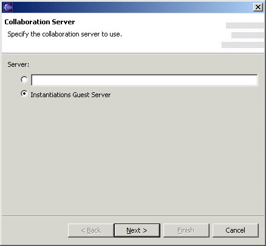

Collaboration Configuration WizardThe Collaboration Configuration Wizard is used to establish a connection to a collaboration server and choose (or create) an identity on that collaboration server. It is invoked from the CodePro | Collaboration preference page. This first page is for specifying the collaboration server.
 The New or Existing User page determines whether to use a new or existing user identity. This page only appears for collaboration servers configured to allow users to add themselves (open enrollment servers), such as the Instantiations Guest Server.
The Existing Users page is for specifying an existing user. The Password page is for submitting the password of an existing user. (The initial password for the administrator is admin, which should of course be changed immediately.) The New User Attributes page is for specifying the attributes of a new user.
The Group page is for specifying the group to which the user initially belongs. The Create new group button is used for creating a new group in addition to those shown. Early StartupCodePro communicates with the collaboration server via polling. In order for this communication to occur at the appropriate time, the collaboration plugin must be loaded and executed when Eclipse is launched.
|